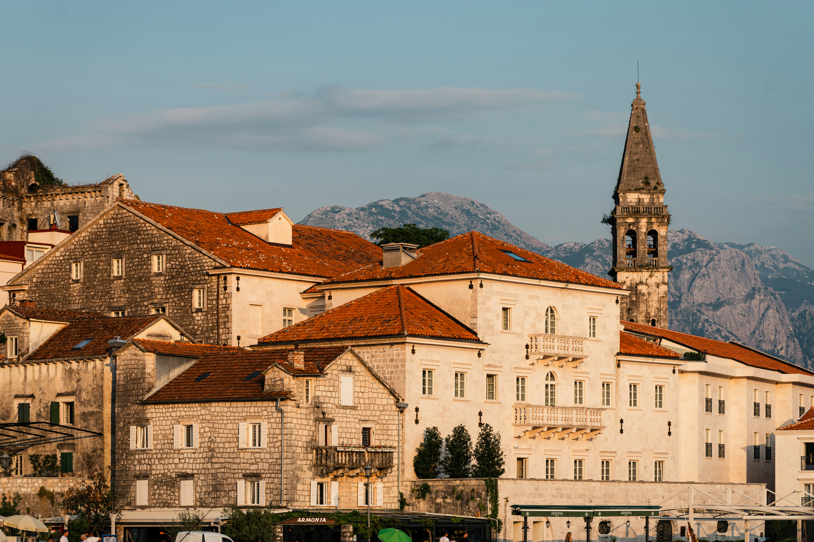

Getting around
Buses, ferries & the rental-car question · working numbers, not quotes
The standing plan is surface travel — the candidate countries chain along shared borders, and the bus drops us in the middle of town instead of an hour out of it. This page keeps the honest comparison in one place: what buses and ferries cost against a rental car, where buses genuinely stop, and how the car's maths move once the group is four, six or eight instead of two. Every figure is a working number from 2026 fare-watching — re-price before booking.
Bus + ferry vs rental car, at four, six and eight
Per person, per day, on a coastal combination
| Line | Bus + ferry | Rental car, per head — 4 / 6 / 8 | Pattern to verify |
|---|---|---|---|
| Daily transport | ~€15–25 on the long legs | ~€9–13 · ~€10–15 · ~€11–18 (economy car at 4, people-carrier at 6, 9-seat van or two cars at 8) | Buses run constantly on the coast; a car sits parked half the trip. |
| Fuel | included in the ticket | ~€2–4 · ~€1–3 · ~€2–3 a head on driving days | Coastal roads are slow; the burns add up. |
| Parking | €0 — arrive in the middle of town | ~€3–6 · ~€2–4 · ~€1–3 a head (€10–25 a vehicle in Split, Dubrovnik & Kotor old towns) | Old towns charge per vehicle; the bus stop is free and central. |
| One-way drop fee | €0 | €13–38 · €8–25 · €6–19 a head in-country; €25–75+ · €17–50 · €13–38 cross-border | The open-jaw shape of the trip is a drop fee on wheels — and two cars double it. |
| Border paperwork | none — walk across | cross-border insurance/authorisation per country, whatever the group size | SA licence rules to verify per country before renting — and 9-seaters are often a "commercial" insurance category some firms refuse across borders. The thing to verify first. |
The more of us there are, the better the car's per-head maths gets — but the sticker price is only half of it: parking and drop fees still join in, and one of us is the designated driver for a trip built around swimming and wine at dinner. Buses stay in the race at every size; the car wins or loses on the legs, not the headline.
The legs, honestly
| Leg | Bus / ferry | Pattern to verify |
|---|---|---|
| Split → Dubrovnik | ~€25–35 · 4–5h | Buses run constantly along the coastal road. A car saves maybe an hour — after parking. |
| Dubrovnik → Kotor | ~€12–40 · two border hops | Local bus or minivan transfer. The car's one real advantage leg — and even here it's marginal. |
| Kotor → Shkodër | ~€18–20 · usually a change at Podgorica | The worst bus leg. If it grates, pay for a one-off private transfer — not a whole rental car. |
| Shkodër → Tirana → Berat | €5–8 a leg | Furgons and buses run hourly-ish. No contest. |
| Ferries | pocket change to day-trip money | The Kamenari–Lepetane bay hop is small change; the Komani Lake ferry is the attraction — a boat day you'd buy anyway. |
Where buses genuinely stop
Four spots on the map where the bus doesn't reach the gate — where you'd pay for a taxi, tour or transfer rather than rent a car for them:
- Lovćen — no bus up the serpentine; a Kotor taxi or day tour (~€30–60pp) covers it.
- Durmitor / Žabljak — buses exist but run sparse; sometimes a private transfer wins.
- Bovilla reservoir — the last stretch is a rough track; tour only.
- Jajce (if the Bosnia-first combination wins) — the mountain drive from Mostar is the one leg where a car or shared transfer earns its keep.
The pattern: bus and ferry as the default, taxi-or-transfer as the spot treatment — and at four to eight the rental car prices itself into the race; the table above is the referee.Field note · Balkans 2027